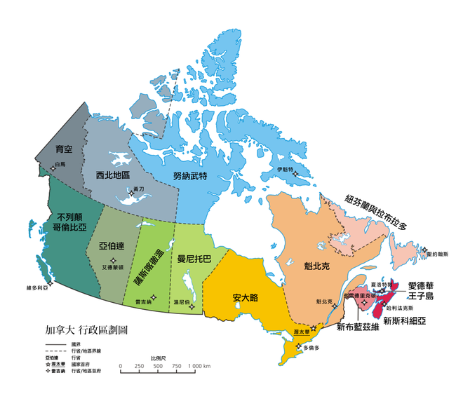
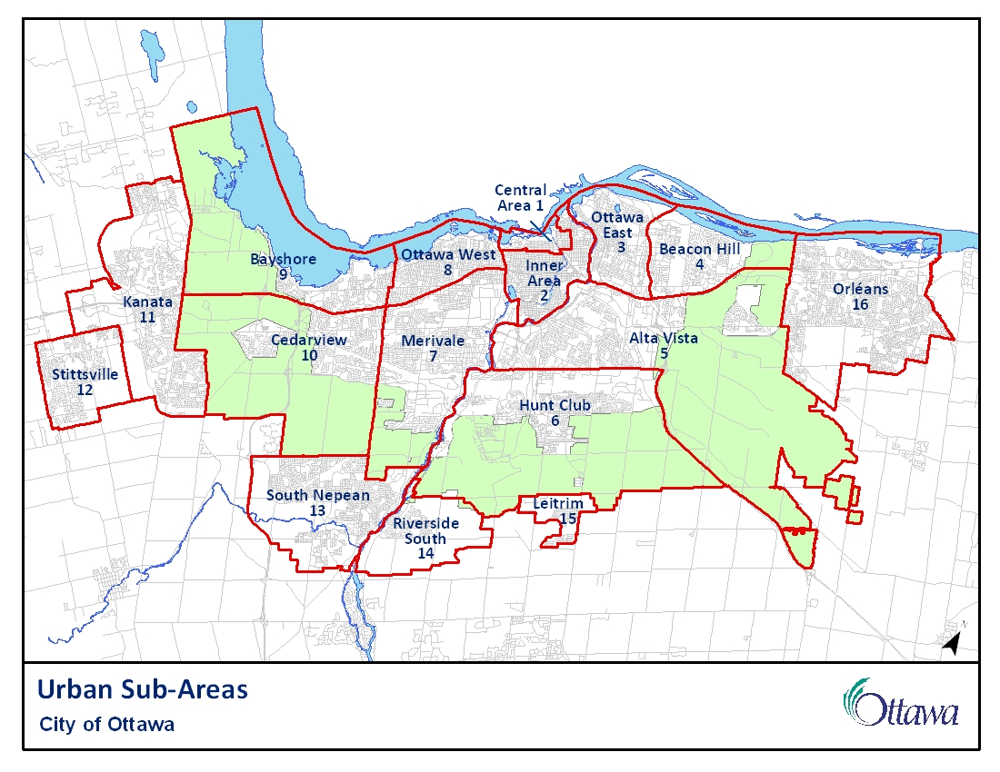

Ontario-Ottawa 安大略省:渥大華簡介


[ Wikipedia ]
渥太华（英语：Ottawa）是加拿大的联邦首都，全国第四大城市，市区人口是934,243人，首都圈地区是1,323,783人（根据2016年人口普查），面积2,779平方公里，位于安大略省东南部，渥太华河南岸，多伦多以东400公里，蒙特利尔以西190公里。与美国、澳大利亚等国不同，渥太华不是联邦直辖的行政区，但是渥太华土地管理和城市规划是由国家首都委员会（National Capital Commission）负责。
在1826年9月26日以“Bytown”之名建立，1850年1月1日合并为一个城镇，[8]并于1855年1月1日以“渥太华”之名合并取代。并不断发展成为加拿大的政治和工业技术中心。城市的原有边界由后来经过多次的小规模兼并而扩大的。“渥太华”这个名称是来自渥太华人，在亚冈昆语（Algonquin language）中的adawe，意思为“贸易”。[9]渥太华常被华人简称为渥京。
根据美世咨询的排名，渥太华是北美生活质量第一的城市。同时也是加拿大第二干净的城市和全球第三干净的城市。渥太华连续被联合国评为10个最适宜人类居住的城市之一。